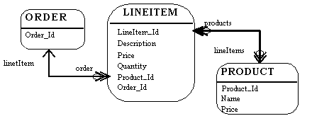
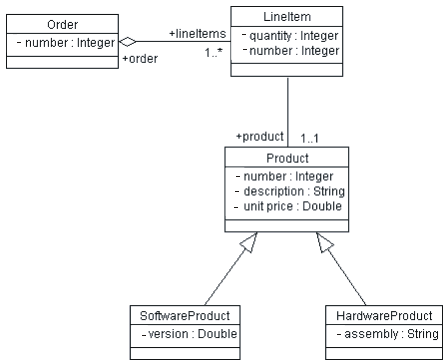
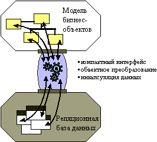

| Концепция: Реляционные базы данных и объектно-ориентированные среды |
 |
|
| Связанные элементы |
|---|
ВведениеДанный документ содержит общие сведения о моделях объектов и моделях реляционных данных, а также краткое описание среды хранения. Реляционные базы данных и объектно-ориентированные средыРеляционные базы данных и объектно-ориентированные среды не могут похвастаться полной совместимостью. Они представляют собой два разных видения мира: в реляционных базах данных вы оперируете данными, а в объектно-ориентированных средах - поведением. Нельзя сказать, что одно из этих видений лучше другого: объектно-ориентированные системы обычно лучше подходят для сложных систем со сложным поведением, в которых данные вторичны, а также для систем, в которых данные структурированы иерархически (например, при работе с ведомостями). Реляционные базы данных отлично подходят для создания отчетов и систем, в которых используются динамические и неструктурированные связи между компонентами. Важное обстоятельство заключается в том, что огромное количество данных хранится в реляционных базах данных, и если объектно-ориентированные системы должны работать с этими данными, они должны уметь обмениваться данными с реляционными СУБД. Кроме того, объектно-ориентированным системам часто приходится обмениваться данными с необъектно-ориентированными системами. В таких ситуациях реляционные СУБД представляют собой естественный механизм обмена данными. Хотя у объектно-ориентированных и реляционных систем есть общие черты (атрибуты объектов по духу схожи со столбцами записей базы данных), существует ряд фундаментальных различий, значительно осложняющих интеграцию. Одно из фундаментальных различий заключается в том, что реляционные модели экспортируют данные (в виде значений столбцов), а объектные - скрывают данные (инкапсулируют их за общими интерфейсами). Реляционная модельВ реляционной модели оперируют терминами объектов и взаимосвязей. Объектом может быть физическая таблица или логическая проекция нескольких таблиц, которую могут называть представлением. На следующем рисунке показаны таблицы LINEITEM, ORDER и PRODUCT и взаимосвязи между ними. В реляционной модели присутствуют следующие элементы:  Реляционная модель У объекта есть столбцы. У каждого столбца есть имя и тип. На рисунке выше у объекта LINEITEM есть столбцы LineItem_Id (основной ключ), Description, Price, Quantity, Product_Id и Order_Id (последние два столбца - внешние ключи, привязывающие объект LINEITEM к объектам ORDER и PRODUCT). Объект содержит записи (строки). Каждая строка представляет собой уникальный набор данных, обычно представляющий собой набор хранимых характеристик объекта. У каждого объекта есть один или несколько основных ключей. LineItem_Id - основной ключ объекта LINEITEM. Особенности поддержки взаимосвязей зависят от разработчика базы данных. В данном примере продемонстрирована логическая модель с взаимосвязью между таблицами PRODUCT и LINEITEM. В физической модели взаимосвязи обычно реализованы в виде ссылок между внешними и основными ключами. Если один объект ссылается на другой, в нем будут столбцы с внешними ключами. В столбцах с внешними ключами хранятся данные, по которым можно установить взаимосвязь между записями данного объекта и записями взаимосвязанного объекта. У взаимосвязей есть понятие множественности. Типичные примеры множественности - один к одному (1:1), один ко многим (1:m), многие к одному(m:1) и многие ко многим (m:n). В данном примере у LINEITEM взаимосвязь 1:1 с PRODUCT, а у PRODUCT взаимосвязь 0:m с LINEITEM. Объектная модельВ объектной модели, помимо прочего, присутствуют классы (полное описание объектной модели можно найти в книге [UML01]). Классы задают структуру и поведение набора объектов, которые иногда называют экземплярами объектов. Структура задается в виде набора атрибутов (значений данных) и связей (связей между классами). На следующем рисунке показана простая диаграмма класса, на которой отмечены только атрибуты (данные) класса.  Объектная модель (диаграмма класса) У атрибута Order есть атрибут number (номер заказа) и связь с одним или несколькими атрибутами Line. У каждого атрибута Line есть атрибут quantity (количество заказанных единиц товара). Объектная модель поддерживает наследование. Класс может наследовать данные и поведение у другого класса (например, продукты SoftwareProduct и HardwareProduct могут наследовать атрибуты и методы у класса Product). Среды храненияБольшинство бизнес-приложений пользуются реляционными системами для физического хранения данных. Сложность для разработчиков объектно-ориентированных приложений заключается в том, чтобы отделить и инкапсулировать реляционную базу данных в достаточной мере для того, чтобы изменения в ней не "сломали" объектную модель и наоборот. Существует множество решений, в которых приложения напрямую обращаются к реляционным базам данных, однако проблема состоит в обеспечении прозрачной интеграции объектной и реляционной моделей. Существует несколько стандартных интерфейсов (API) для работы с базами данных, например Microsoft Open Data Base Connectivity (ODBC). Все эти интерфейсы закрыты (взаимодействуют с конкретными реализациями СУБД). Интерфейсы API поддерживают язык управления данными (DML), применяемый приложениями для работы с реляционными базами данных. Для применения реляционных данных в объектно-ориентированных приложениях требуется преобразование этих данных в объектно-ориентированный формат. Для преобразования выборки данных в объекты приложения требуется довольно весомый программный код. Цель объектно-реляционной среды заключается в инкапсуляции физического хранилища данных и предоставлении функции преобразования данных в объектный формат.  Назначение среды хранения Около 30% времени разработчики приложений тратят на организацию доступа к реляционным базам данных из объектно-ориентированных приложений. Если объектно-ориентированный интерфейс реализован неправильно, это время можно считать потерянным. Создание объектно-реляционной среды позволяет избежать таких потерь. Применение объектно-реляционной среды в приложениях позволяет сократить стоимость организации доступа к реляционным базам данных до менее чем 10% общей стоимости реализации. Важнейший компонент стоимости, который следует принимать во внимание при реализации, - обслуживание. Свыше 60% общей стоимости системы на протяжении ее жизненного цикла составляет обслуживание. Плохо реализованная объектно-реляционная система может стать настоящим кошмаром при обслуживании системы как с технической, так и с финансовой точек зрения. Основные характеристики объектно-реляционной среды
Общие службы объектно-реляционной среды
В разработке объектно-реляционных приложений намечаются общие тенденции. Специалисты, неоднократно занимавшиеся
интеграцией подобных систем, начинают понимать и выявлять определенные структуры и свойства удачных
объектно-реляционных приложений. Эти структуры и свойства были формализованы в высокоуровневых спецификациях CORBA
(которые относятся и к системам на основе COM/DCOM). В следующих разделах обсуждение объектно-реляционных служб структурировано по этим категориям. Настоятельно рекомендуется ознакомиться с соответствующими спецификациями CORBA. ХранениеТермин "хранение" применяется для описания механизма, который используется для сохранения состояния объектов в промежутках между сеансами. Среда хранения позволяет пользователю сохранять объекты в конце сеанса работы, а затем обращаться к ним из следующего сеанса. При обращении к объектам из следующего сеанса их состояние (например, набор атрибутов) будет точно соответствовать их состоянию на момент сохранения в предыдущем сеансе. В многопользовательских системах это правило может не выполняться, поскольку разные пользователи могут изменять одни и те же объекты. Хранение взаимосвязано с другими службами, обсуждаемыми в этом разделе. В частности, взаимосвязь с параллелизмом и другими категориями намеренна и соответствует структуре классификации служб CORBA. Ниже перечислены некоторые службы, предоставляемые системой хранения:
ЗапросОт системы хранения мало пользы в отсутствие механизма поиска и извлечения нужных объектов. Средства поиска применяются для нахождения объектов, удовлетворяющих определенным условиям. Стандартные операции поиска в объектно-реляционных средах - find и find unique. Операция find unique возвращает конкретный объект, а операция find - набор объектов, соответствующих заданным критериям. Набор средств выборки данных очень сильно зависит от разновидности СУБД. В простых файловых хранилищах данных может поддерживаться минимальный набор необходимых операций, тогда как реляционные СУБД зачастую снабжены гибким языком управления данными. Среды объектно-реляционных преобразований расширяют модель реляционных запросов и смещают ее акцент с данных на объекты. Кроме того, для обеспечения достаточной гибкости и поддержки расширений, зависящих от конкретной реализации, применяются сквозные интерфейсы (например, хранимые процедуры). Учтите, что существует потенциальный конфликт между механизмами запросов к базам данных и объектной парадигмой: механизмы запросов работают на основе значений атрибутов (столбцов) таблицы. Принцип инкапсуляции объектной модели не позволяет видеть значения атрибутов, так как они инкапсулированы за операциями класса. Инкапсуляция применяется для того, чтобы упростить изменение приложений - она дает возможность изменять внутреннюю структуру классов, не беспокоясь о зависимых классах постольку, поскольку не меняются внешние интерфейсы изменяемого класса. Механизм запросов зависит от внутренней реализации классов и таким образом нарушает инкапсуляцию. Задача среды заключается в том, чтобы сохранить независимость приложений от особенностей запросов и сохранить свободу изменения классов. ТранзакцииПоддержка транзакций позволяет разработчикам определить понятие единицы (кванта) работы. В терминологии баз данных это значит, что система должна уметь либо внести сразу набор изменений к базе данных, либо гарантировать, что ни одно из этих изменений не было внесено. В рамках транзакции либо все операции выполняются успешно, либо транзакция не выполняется вовсе. В объектно-реляционных средах, как минимум, должны поддерживаться операции фиксации и отката. Разработка объектно-реляционной среды в многопользовательской системе может быть сопряжена с различными сложностями и должна быть тщательно продумана. Помимо среды хранения, приложение должно уметь обрабатывать ошибки. Если транзакция будет прервана или завершится с ошибкой, система должна быть в состоянии вернуться в стабильное рабочее состояние, например путем считывания информации о предыдущем состоянии из базы данных. Поэтому среда хранения и среда обработки ошибок должны работать в тесном взаимодействии. ПараллелизмМногопользовательские объектно-ориентированные системы должны поддерживать управление одновременным доступом к объектам. Если с объектом одновременно работают несколько пользователей, в системе должен быть предусмотрен последовательный механизм управления изменением объекта в системе хранения. В объектно-реляционных средах могут применяться пессимистичный и оптимистичный подходы к управлению параллелизмом.
Все приложения, работающие с общими данными, должны пользоваться одной и той же стратегией управления параллелизмом. Смешение разных стратегий управления в пределах одного набора данных может привести к повреждению данных. С обеспечением единства стратегии управления параллелизмом лучше всего справится среда хранения. Взаимосвязи
У объектов есть взаимосвязи с другими объектами. У объекта Order есть несколько объектов Line Item. У объекта Book есть
много объектов Chapter. Объект Employee принадлежит ровно одному объекту Company. В реляционных системах взаимосвязи
между объектами реализованы с помощью ссылок на основные и внешние ключи. В объектно-ориентированных системах такие
взаимосвязи обычно явно заданы с помощью атрибутов. Если у объекта Order есть объекты LineItems, объект Order будет
содержать атрибуты lineItems. Атрибут lineItems объекта Order может содержать произвольное количество объектов
LineItem.
Хотя в целом правильнее рассматривать общие службы объектно-реляционной среды независимо друг от друга, в реальности эти службы будут сильно зависеть друг от друга. Они должны быть единообразно реализованы не только в масштабах всех подразделений организации, но и во всех приложениях, работающих с одними и теми же данными. Единственный экономичный способ решения этой задачи заключается в формировании общей среды. |
© Copyright IBM Corp. 1987, 2006. Все права защищены.. |